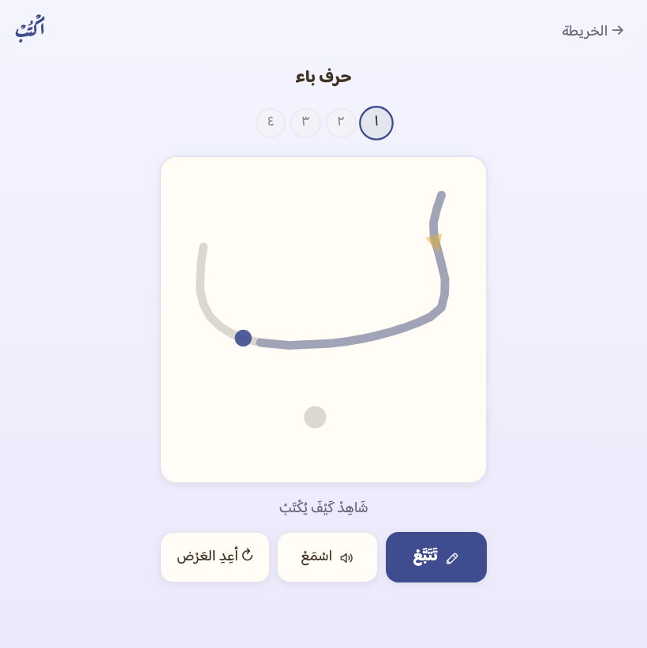
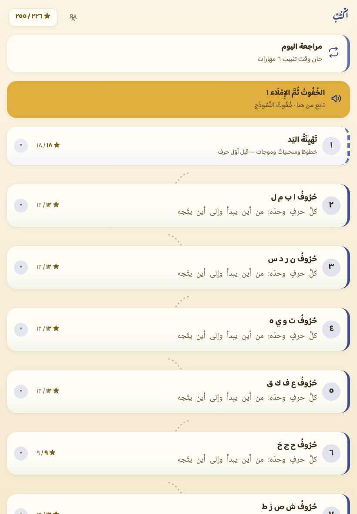
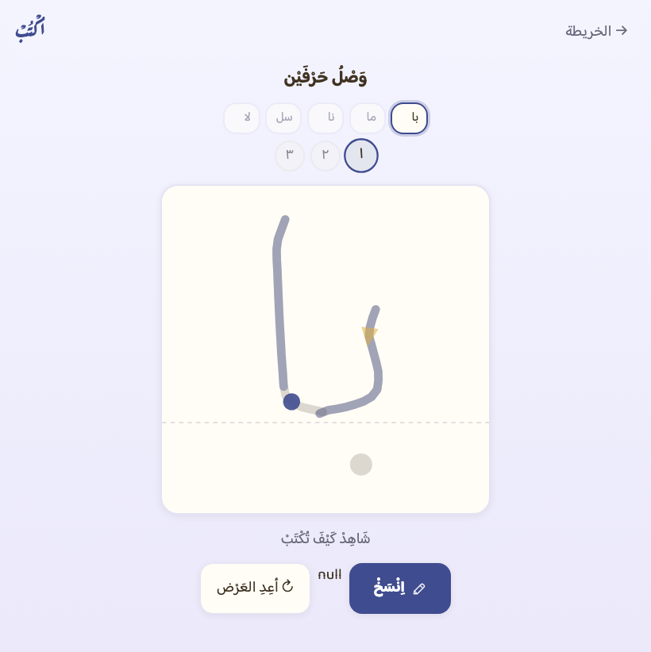
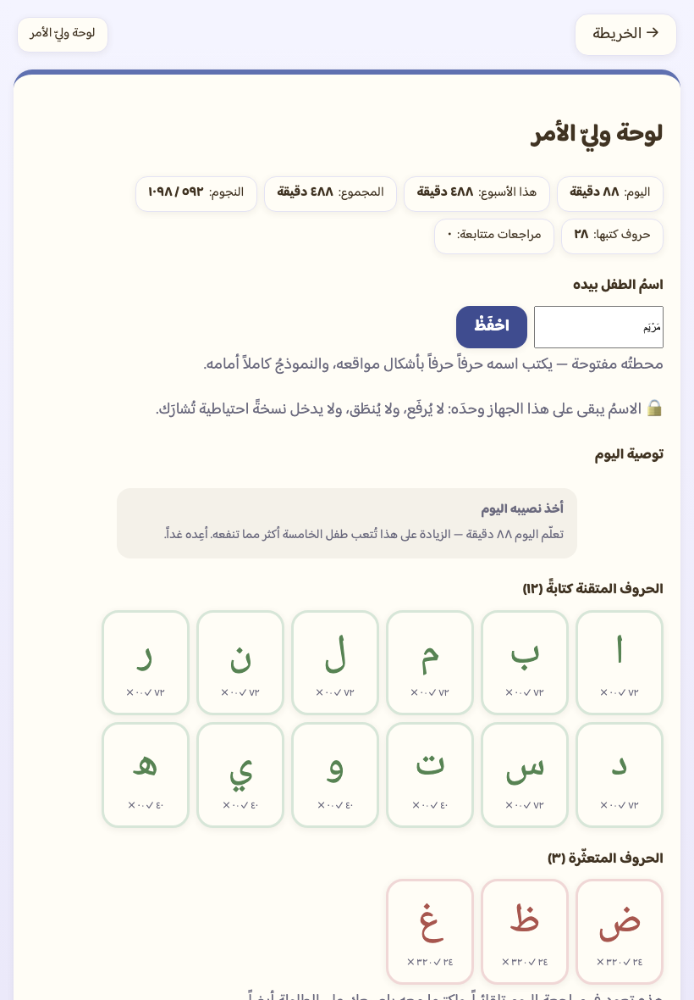

آيباد وآيفون (سفاري)
- افتح write.mishkat.qa في سفاري.
- اضغط زرَّ المشاركة (المربّع الذي يخرج منه سهمٌ إلى أعلى).
- اختر «إضافة إلى الشاشة الرئيسية».
تطبيق ويب مجاني يعلّم الكتابة اليدوية لطفل من خمس إلى سبع سنوات. لا يقيس شكلَ الحرف بعد رسمه، بل يمشي مع القلم: نقطةُ البداية، واتجاهُ الحركة، وترتيبُ الأجزاء، والنقاطُ بعد الجسم. طريقٌ واحد متصل يبدأ بخطوطٍ ومنحنياتٍ قبل أوّل حرف، وينتهي بكتابة جملةٍ سماعاً — ولا يُطلب من الطفل أن يكتب شيئاً لم يتعلّم كتابتَه.
ابدأ الآن ←يفتح في المتصفّح مباشرة — بلا تنزيل، وبلا حساب، وبلا إعلانات.

التطبيق يعمل في المتصفّح، لكنّ تثبيتَه على الآيباد أو الجوال هو ما نوصي به: يفتح من أيقونته بلا شريط متصفّح، ويعمل دون إنترنت، ورحلةُ الطفل تبقى محفوظة في جهازه — فليس عندنا حسابٌ يحملها.
والشريطُ لا يُلحّ: زرُّ إغلاقٍ يُسكِته أسبوعاً، ولا يظهر أصلاً لمن ثبّته.
بابان اختياريان في لوحة وليّ الأمر لا في شاشة الطفل: يفتحهما المعلّم متى شاء ويغلقهما متى شاء، ولا يرى الطفلُ منهما زرّاً ولا كلمة. وهما متعامدان: اللحاقُ يحدّد أين يبدأ، والدعمُ يحدّد كيف يمشي — فيجتمعان لتلميذٍ يصل يعرف بعضَ حروفه ويحتاج وتيرةً أهدأ.
يصعد وحدةً وحدة بترتيب الرحلة ويكتب بيده عيّنةً من كل وحدة (لا يلمس صورةً ولا ينتقي من أربع) — فما أثبتته يدُه يُفتح له، وعند أوّل وحدةٍ ينكسر فيها يقف. يفتح ما أُثبت لا ما ادُّعي، وعتبتُه عتبةُ بوّابات الإتقان نفسُها (٨٠٪)، وكلُّ كتابةٍ فيه تدخل صناديقَ مراجعته قياساً حقيقياً — وما فُتح لا يُغلق أبداً.
خمسةُ مقابضَ من مادّة الكتابة: نموذجٌ أبطأ يمشي القلمُ فيه على مهله، وخطٌّ أغلظ يُرى أوضح، وسماحةٌ أوسع في أوّل لقاءٍ بالحرف، وهدوءٌ حسّي يطفئ الحركات، وجرعةٌ أقصر للمراجعة. ولا يُحتسب ما أُعين عليه إتقاناً: المحاولةُ المعانة تُسجَّل ولا ترفع صندوقاً — وما يمسّ القياس يُعطَّل داخل بوابة اللحاق فلا يُفتح ما لم يُثبَت. والمؤشّرُ يعرفه المعلّم بخطٍّ هادئ في الشريط العلويّ، بلا كلمةٍ تَسِمُ الطفل.
وضعُ الدعم يعاير الإيقاع ولا يبدّل المنهج: لا يشخّص عُسرَ كتابةٍ ولا يعالجه، ولا يحكم على خطّ طفلك حكماً طبّياً، ولا يخدم الكفيفَ ولا الأصمَّ المُشير ولا غيرَ الناطق، ولا نَعِد بحجم أثر — وهو في تجربةٍ ميدانية.
لا يُقارن رسمَ الطفل بصورة الحرف بعد رفع القلم. المحرّك يمشي مع القلم على المسار المرجعي ويحكم بأربعة شروط: أنزلتَ قلمك عند البداية؟ أتقدّمتَ في اتجاه المسار؟ أبقيتَ داخل سماحته؟ أرتّبتَ الأجزاء؟ فالخطأ يُعرَف بموضعه، لا بدرجةٍ مبهمة.
العرضُ المتحرّك الذي يشاهده الطفل يُرسم من المسار المرجعي نفسِه الذي يُحكَم به عليه — فلا نموذجٌ ومسطرةٌ يفترقان. و٢٨ حرفاً بأشكالها ١٧٦ مؤلَّفةٌ بأداةٍ على شبكة، لا إحداثياتٍ مكتوبةً بيد.
مساراتُ قلم الطفل تُقاس في الجهاز وتُمحى — لا تُرسَل ولا تُخزَّن ولا تُرفَع. ووحدةُ القلم لا تعرف الشبكة بنيةً، يحرس ذلك فحصٌ نصيّ وفحصُ متصفّحٍ يشترط صفرَ طلباتٍ في دورة كتابةٍ كاملة.
لا ساعةَ تركض ولا خسارةَ نقاط. والانحرافُ يُصحَّح إرشاداً: نقطةُ البداية تومض، والمسارُ يتلوّن تحت القلم، والإعادةُ بلا حدّ. والبوّاباتُ ٣ تُعيد ولا تُرسِّب.
وكلُّ رقمٍ هنا محسوبٌ من بيانات المنهج وقتَ الفحص لا مكتوبٌ بيد — يتغيّر بتغيّرها، ويُسقِط الفحصَ إن افترقا.
هذه ليست رسومَ عرض: كلُّ لقطةٍ تُلتقط من شاشات التطبيق نفسِها بمقاس آيباد حقيقيّ، وتُعاد مع كل تغيّرٍ في الشاشة.


